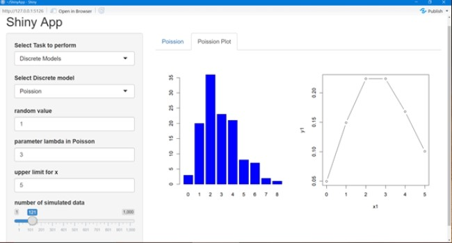
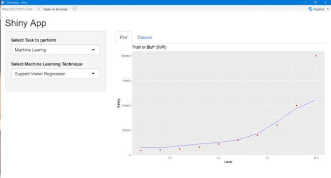
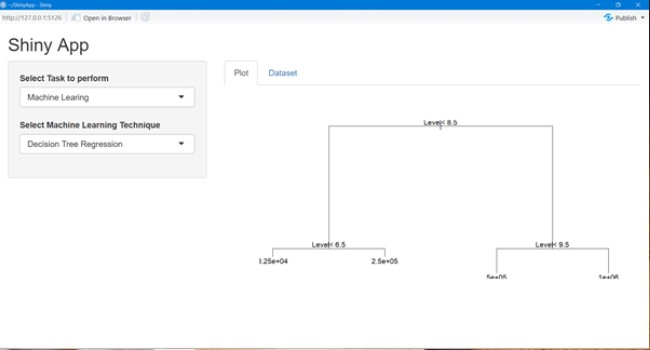

R language is one of the most popular language for satistical modelling and analysis, but it has limitaions when is comes to learning and implementing. This is where Shiny a package in R from RStudio helps to make easy to build interactive web apps straight from R. This apps can be hosted as standalone apps on webpage or embeded with R markdown. Developed application provides the features like Importing data, Descriptive Analysis, implementing probabilistic models on data. It provides easy to understand GUI in which all the functionalities can be performed using click of mouse. There is no need to write code of lines for applying models on data or for vizulization. It can provide choise of 3 probabilistic models: 1) Binomial 2) Poission 3) Geometric and 3 ML Regression Models: 1) Support Vector Regression 2) Simple Linear Regression 3) Decision Tree Regression
RStudio is used as the integrted development environment for R. Dependencies such as e1071 for Support Vector Machine, rpart for Decision Tree Regressor, caTools for basic windows utility functions.The library ggplot2 helps for creating graphics based on The Grammer of Graphis in which user just need sto provide the data and tell ggplot2 how to map variables to aesthetics, what graphical primitives to use, and ggplot2 takes care of the details hence saving time in assign values of variables and setting attributes. For creating standalone GUI based application Shiny packages is required. Once this libraray is installed the applicatioon is didved into 2 parts: Server side and User Interface. Server.R file has the code which will implment features on data selected by the user. UI.R file containf the front-end part such as dropdown list, Radio buttons, Displaying graphs, Descriptive data, etc.
With the help of dropdown list user can choose whihc dataset to be loaded. Once dataset is loaded details of data it can be displayed such as Summary of data, Plotting scatter plot, Structure and Dimensionof of data. For statistic part as per the selection text box and range will be displayed which will show correspondig graph and will change accoding to the users selction. For probabilistic models 2 graphs are displayed 1) Histogram 2) Dotted Line graph. under Machine Learning SVR and Simple Linear Regression displays plot which contais predictive line in Blue color and actual vallues as sccoter plotsin Red Color. In decision tree the splitting is displayed at different level.
RStudio, Shiny, e1071, ggplot2, caTools, party
Binomial Model
Poission Model
Suppport Vector Rseggresor
Decision Tree